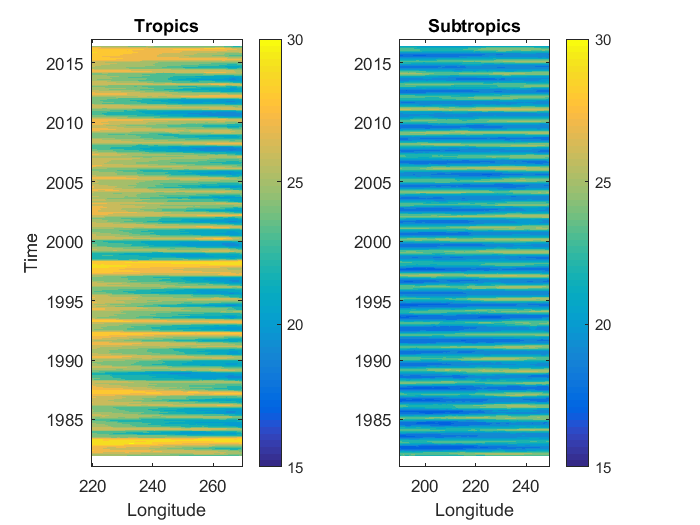
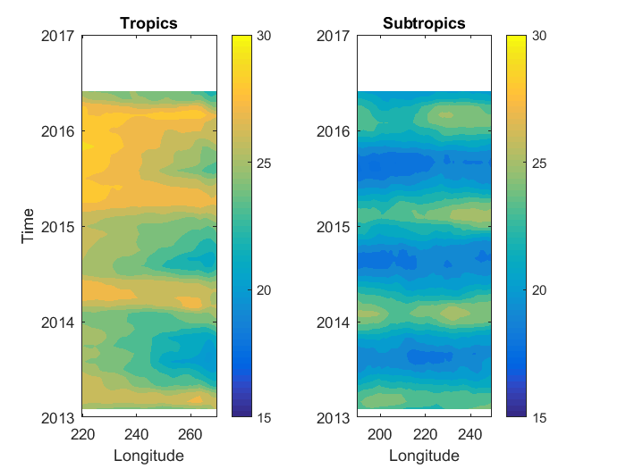
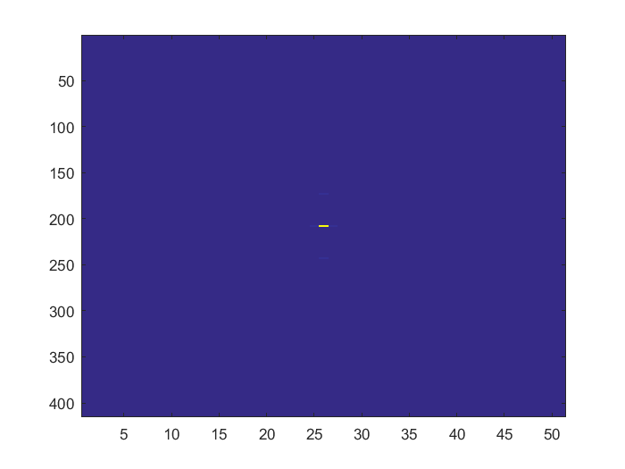

Contents
Ren_data1_week8.m
Look at aliasing and frequency wavenumber spectra
A. Ren Nov. 29, 2017
Aliasing
Class examples
when sampling period is shorter than the period:
9 hour sampling, 12 hour oscillation
nyquest of sampling is
for 15 days of sampling, the fundamental frequency f = 1 cycle/15 days
the total number of cycles resolved is (15 *24 hours / 9 hours)/2 which
is 40/2 = 20.
the nyquest frequency is 20/15 cycles per day or 20f
however the 12 hour oscillation means the total number of cycles
resolved in 15 days is (15*24/12) which is 30
it's frequency is 30 cycles/15 days which is 30f. This is beyond the
nyquest frequency of measurement.
20/15 + 10/15 = 30/15; 20f +10f = 30f; This aliases back into 20f - 10f
= 10f.
if the nyquist frequency fits multiple times "in" the true frequency,
then the formula depends on M, the multiple, whether it is even or odd.
Think about folding up or down.
Peri_sampling_indays = 9.9156;
Peri_phenom_inhours = 12.4206;
f_sampling=1/(Peri_sampling_indays);
f_phenomenon=24/Peri_phenom_inhours;
f_Nyquist=f_sampling/2;
M = floor(f_phenomenon/f_Nyquist)
alias = f_phenomenon - floor(f_phenomenon/f_Nyquist)*f_Nyquist;
if(rem(M,2)~=0)
alias=f_Nyquist-alias;
end
aliasperiod = 1/alias
M =
38
aliasperiod =
62.1068
Aliasing for new SWOT satellite
period_orbit = [0.99349 20.86455];
peri_oname = {'Fast sampling:', 'Slow sampling:'};
period_pheno = [24.00 12.42];
peri_pname = {'S1 Solar diurnal', 'M2 Principal lunar'};
for n = 1:2
for m = 1:2
Peri_sampling_indays = period_orbit(n);
Peri_phenom_inhours = period_pheno(m);
disp(peri_oname{n}); disp(peri_pname{m});
f_sampling=1/(Peri_sampling_indays);
f_phenomenon=24/Peri_phenom_inhours;
f_Nyquist=f_sampling/2;
M = floor(f_phenomenon/f_Nyquist)
alias = f_phenomenon - floor(f_phenomenon/f_Nyquist)*f_Nyquist;
if(rem(M,2)~=0)
alias=f_Nyquist-alias;
end
aliasperiod = 1/alias
end
end
Fast sampling:
S1 Solar diurnal
M =
1
aliasperiod =
152.6098
Fast sampling:
M2 Principal lunar
M =
3
aliasperiod =
12.3857
Slow sampling:
S1 Solar diurnal
M =
41
aliasperiod =
154.0388
Slow sampling:
M2 Principal lunar
M =
80
aliasperiod =
65.6178
Frequency Wavenumber Spectra
filename = 'sst.mnmean.nc';
mtime = ncread(filename, 'time');
mlat = ncread(filename, 'lat');
mlon = ncread(filename, 'lon');
dst = datenum(1800, 1, 1);
mtime_mt = mtime+dst;
mlat_tropic = -0.5;
mlat_subtro = -29.5;
mlon_tr = [219.5 269.5];
mlon_sb = [189.5 249.5];
a1 = find(mlat == mlat_tropic);
a2 = find(mlat == mlat_subtro);
b1 = find(mlon == mlon_tr(1));
b2 = find(mlon == mlon_sb(1));
c1 = length(mlon_tr(1):mlon_tr(2));
c2 = length(mlon_sb(1):mlon_sb(2));
msst_tr = ncread(filename, 'sst', [b1, a1, 1], [c1, 1, length(mtime)]);
msst_sb = ncread(filename, 'sst', [b2, a2, 1], [c2, 1, length(mtime)]);
Hovmoller Plot
want longitude on x axis and time on y axis
msst_tr_plot = squeeze(msst_tr)';
msst_sb_plot = squeeze(msst_sb)';
figure('Name', 'Hofmoller Plots')
subplot(1, 2, 1)
contourf(mlon_tr(1):mlon_tr(2), mtime_mt, msst_tr_plot, 'lineColor', 'none')
datetick('y', 10)
title('Tropics')
xlabel('Longitude')
ylabel('Time')
ylim([datenum(1981, 1, 1) datenum(2017, 1, 1)])
caxis([15 30])
colorbar
subplot(1, 2, 2)
contourf(mlon_sb(1):mlon_sb(2), mtime_mt, msst_sb_plot, 'LineColor', 'none')
datetick('y', 10)
title('Subtropics')
xlabel('Longitude')
ylim([datenum(1981, 1, 1) datenum(2017, 1, 1)])
caxis([15 30])
colorbar
figure('Name', 'Hofmoller Plot - zoomed in')
subplot(1, 2, 1)
contourf(mlon_tr(1):mlon_tr(2), mtime_mt(end-40:end), ...
msst_tr_plot(end-40:end, :), 'lineColor', 'none')
datetick('y', 10)
title('Tropics')
xlabel('Longitude')
ylabel('Time')
caxis([15 30])
colorbar
subplot(1, 2, 2)
contourf(mlon_sb(1):mlon_sb(2), mtime_mt(end-40:end), ...
msst_sb_plot(end-40:end, :), 'LineColor', 'none')
datetick('y', 10)
title('Subtropics')
xlabel('Longitude')
caxis([15 30])
colorbar
 
Back to frequency wavenumber
st = fftshift(fft2(msst_tr_plot))/(415*51);
spec = abs(st);
figure
imagesc(spec)
